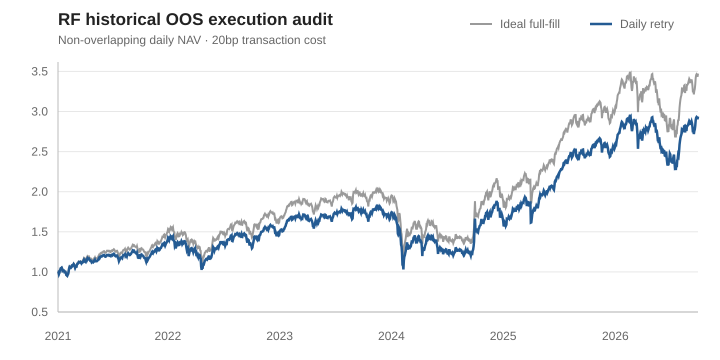

A 股点时多因子、模型比较与执行审计
2026 — 至今
独立研究 · Python / PIT / Purged walk-forward / Execution audit
- 构建覆盖 2006–2026 年、5,521 只历史股票和约 1,479 万行特征的点时研究管线，以证券快照、信息可用日和分区审计控制幸存者偏差与前视偏差。
- 在同一 15 因子、5 日可执行标签和年度扩展窗口下比较方向等权、OLS、Ridge、ElasticNet、RandomForest 与 HGB；模型只按验证集选择，并用块 bootstrap 检验增量。
- 因 RF 初始组合收益异常偏高，进一步定位节假日短周持有期重叠及次日停牌/涨跌停完整成交偏差，并重写非重叠日频股数订单与失败订单重试引擎。
- 修正后 RF 在 2021–2026 historical OOS、20 bp 成本下年化 21.6%、Sharpe 0.87、最大回撤 -43.3%；同时披露 Ridge 规模中性化后年化从 21.2% 降至 16.3%、RF 局部参数稳健性未过预设门槛等负面结果。
代码与研究报告 →

2021–2026 historical OOS：同一非重叠日频时钟下的理想全成交上界与停牌/涨跌停逐日重试结果。历史回测不代表未来收益或实盘业绩。
LLM From Scratch：1B 模型端到端预训练
2026
个人研究 · LLaMA / DeepSpeed ZeRO Stage 3 / 8×RTX 3090
- 完成数据清洗、精确与模糊去重、Tokenizer、定长样本打包、训练及断点恢复等完整流程。
- 在 8×24GB RTX 3090 节点上训练约 1B 参数模型，训练数据约 1B token，周期约一周。
项目仓库 →
YuFormer：完整 LLM 研究流程实践
在研
个人研究 · 基于 ZGCM 项目的进一步探索
已实现数据治理框架、BPE/Unigram Tokenizer 实验工具，以及支持 GQA、RoPE/NoPE 和滑动/全局注意力的可配置 Dense Decoder；预训练、SFT、RL 与 scaling 实验仍在推进。
项目仓库 →
多模态具身导航
项目负责人
基于 OmniGibson 与 Isaac Sim 搭建类 Gym 环境，生成 5,000+ 导航任务与参考轨迹，实现融合文本、图像、声音和状态信息的 PPO 训练框架。
MoneyTracker 智能账本
Android 应用
使用 Kotlin、MVVM、Room 与 WorkManager 开发离线智能记账应用，自动解析支付通知和银行短信，并通过五层自进化分类引擎完成本地消费分类。
项目仓库 →
Microduck 开源双足机器人复现
在研
负责运动策略模型训练、推理调用与配套软件开发，推进训练、推理和机器人控制链路联调。
基于边缘计算的激光除蟑螂系统
项目负责人
训练 mAP>0.9 的目标检测模型并部署至 Raspberry Pi 5，结合 ESP32、电机、激光与闭环 PID，实现 10+ FPS 推理和 5mm 级定位。
見微 Jianwei 知识系统
开源项目
基于 Astro 与 MDX 构建内容优先的知识实验室，支持数学公式、三级内容模型、多主题与字体切换，并部署于 Cloudflare Pages。
项目仓库 · 在线访问 →
AI 视频与音乐创作工作流
创作实践
搭建 AI 视频短剧创作与音乐二创流程，组合多种生成式工具完成创意策划、素材生成、编辑与成品输出。